Beteiligungen
Mit XPlanung-light lassen sich bliebig viele Beteiligungsverfahren verwalten.
XPlanung sieht hier aktuell nur zwei verschiedene Typen vor, die in Form von Datumswerten dokumentiert werden:
xplan:auslegungsStartDatum,xplan:auslegungsEndDatumxplan:traegerbeteiligungsStartDatum,xplan:traegerbeteiligungsEndDatum
Da dies nicht ausreichend ist, um Beteiligungsverfahren abbilden zu können, nutzt XPlanung-light ein eigenes Datenmodell.
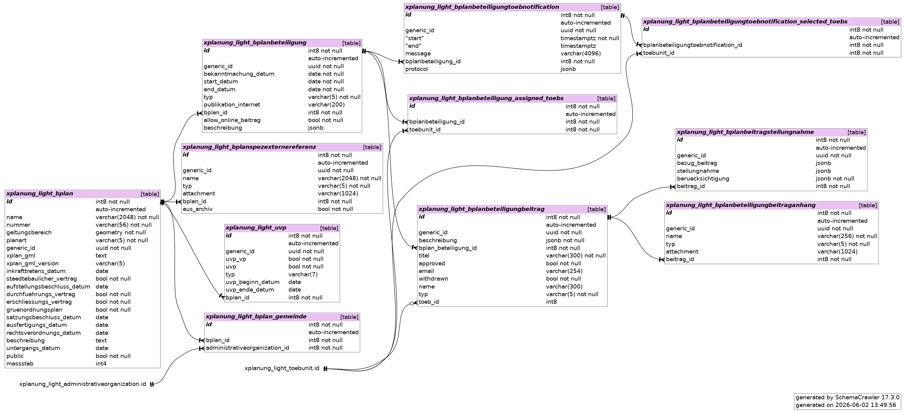
Beteiligungsverfahren anlegen
Zur Beteiligungsverwaltung kommt man über Pläne und Satzungen -> Bebauungspläne. Link in der Spalte Beteiligungen.
Formular zur Erfassung eines Beteiligungsverfahrens
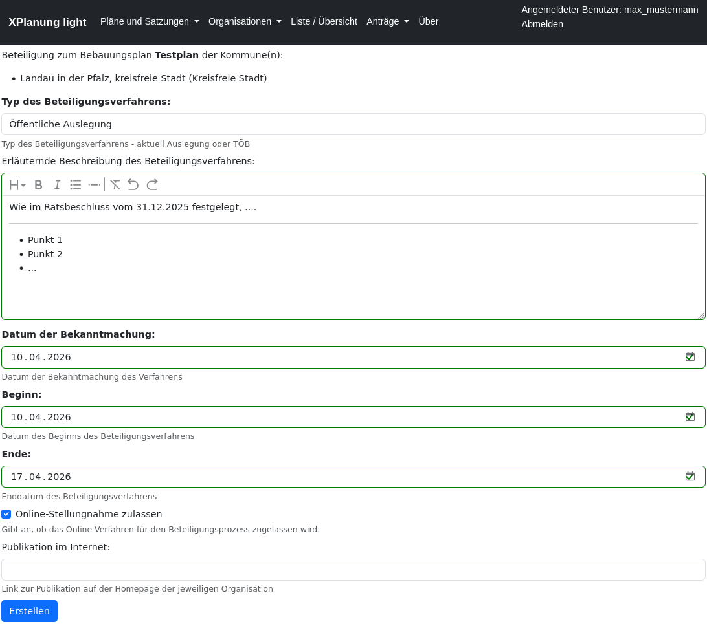
Liste der Beteiligungsverfahren
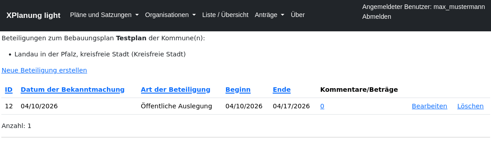
Online Stellungnahme (Öffentlichkeit)
Auf der Auskunftsseite der Gebietskörperschaft werden die aktuell laufenden Beteiligungsverfahren aufgelistet. Ist die Online-Stellungnahme aktiviert, kann bekommt der Nutzer dies angezeigt und ein Formular angeboten.
Online-Auskunft der Gebietskörperschaft
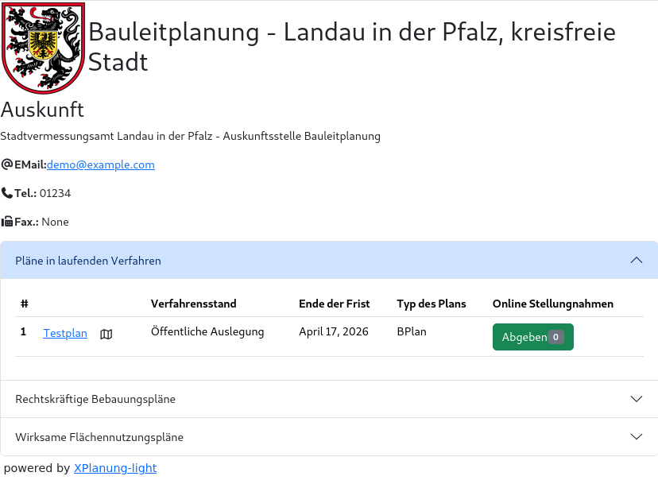
Formular für Abgabe der Stellungnahme
Hier können neben eines Titels und einer Beschreibung auch bis zu vier Anlagen beigefügt werden.
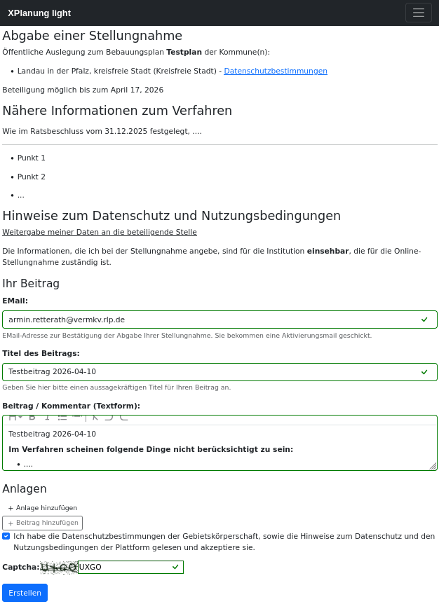
Aktivierungsmail
Zur Sicherheit, muss der Stellungnehmende die Abgabe seiner Stellungnahme über einen Aktivierungslink bestätigen.
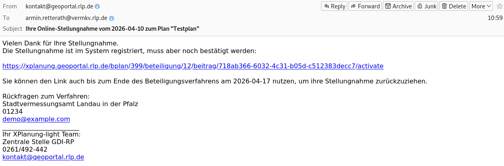
Zurückziehen einer Stellungnahme
Der Stellungnehmende kann seine Stellungnahme während des laufenden Beteiligungsverfahrens jederzeit zurückziehen. Hierzu nutzt er den Link aus der Aktivierungsmail. Falls die Session abgelaufen ist, muss er sich jedoch durch Angabe seiner EMail-Adresse erneut authentifizieren.
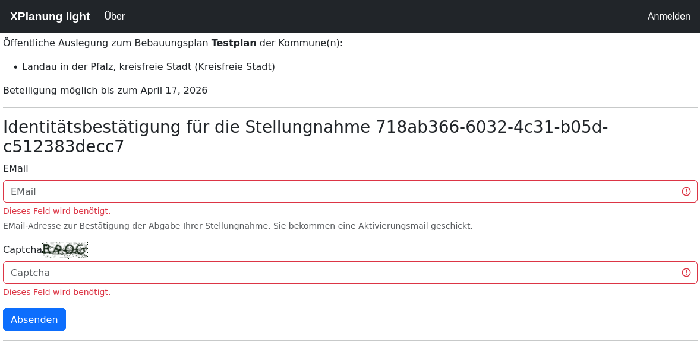
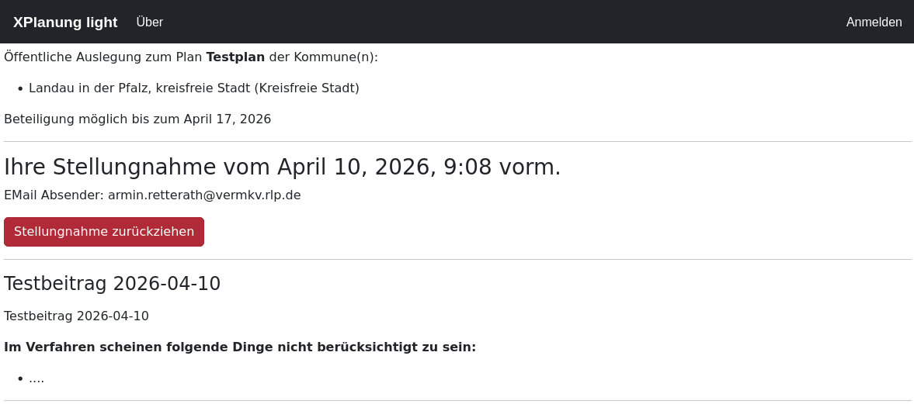
Liste der Stellungnahmen
Der Bearbeiter hat eine Übersicht über die abgegebenen Stellungnahmen.
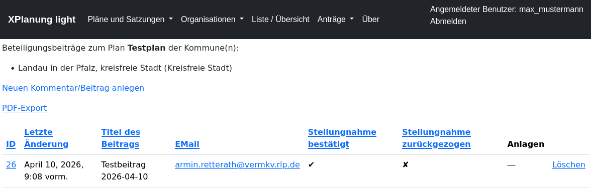
Report zum Beteiligungsverfahren
Man kann einen PDF-Report für die Akten generieren lassen.
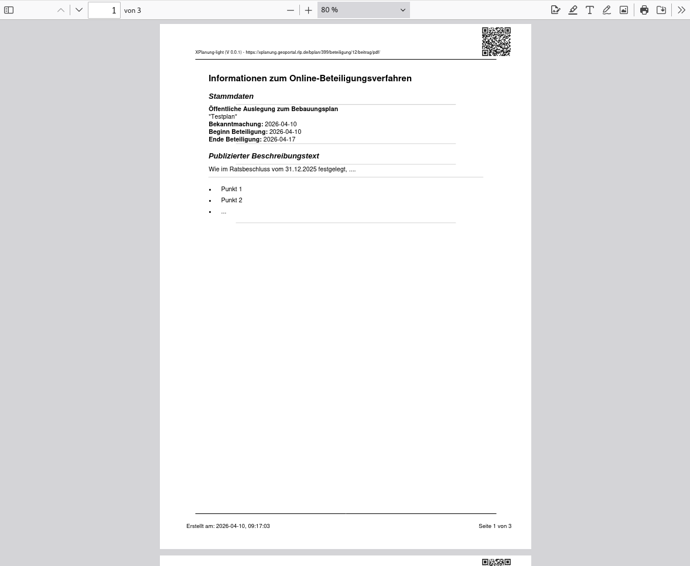
TOEB-Beteiligung
Neben der Online-Öffentlichkeitsbeteiligung lassen sich auch TOEB-Beteiligungen (Trägerbeteiligungen) abbilden.
Bei der Trägerbeteiligung entscheidet die jeweilige Gebietskörperschaft darüber, welche Institution beteiligt werden soll. In der Regel sind das Behörden, NGOs oder aber auch andere Gebietskörperschaften und ggf. sogar Vereine. Zum aktuellen Zeitpunkt nutzen die meisten Kommunen Excel-Tabellen zur Pflege der zu beteiligenden Organisationen. Kontaktinformationen werden also hochgradig redundant verwaltet. Es gibt selten einheitliche Vorgaben wie beispielsweise in Hessen (Anlage zum Erlass über TOEB-Beteiligung).
Die verwendeten Listen haben i.d.R. einen Umfang von 40 - 120 Kontaktstellen und gliedern sich nach thematischen und räumlichen Zuständigkeiten. Je nach Verfahren entscheidet der Träger darüber welche der Stellen angeschrieben werden. Die Benachrichtigung der Träger erfolgt in fast allen Fällen per E-Mail.
Modellierung TOEBs
Die TOEBs sind - wie auch die Gebietskörperschaften - Objekte der Klasse AdministrativeOrganization. Es gibt zusätzlich ein ToebUnit Modell, dass die jeweiligen Kontaktstellen abbildet. TOEB-Kontaktstellen haben sowohl eigene fachliche und räumliche Zuständigkeiten als auch eine eindeutige Zuordnung zu einem fachlichen Thema. Eine TOEB-Kontaktstelle kann mehrere Sachbearbeiter haben. Die Sachbearbeiter sind Nutzer des Systems mit der Rolle TOEB-Reporter. Da sich die Rolle auf die Organisation TOEB bezieht, kann ein Sachbearbeiter Beiträge für verschiedene Kontaktstellen (sogar organisationsübergreifend) anlegen und verwalten.
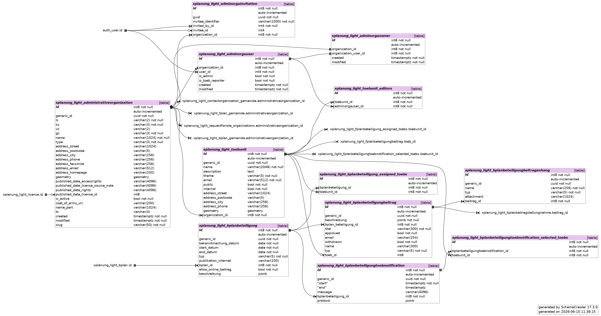
Verwalten von TOEB-Stellen
Ein Nutzer, der die Administratorrolle für eine Organisation hat, kann eigene TOEB-Stellen verwalten. In der Liste der Sachbearbeiter stehen Nutzer zur Auswahl, die die TOEB-Reporter Rolle haben.
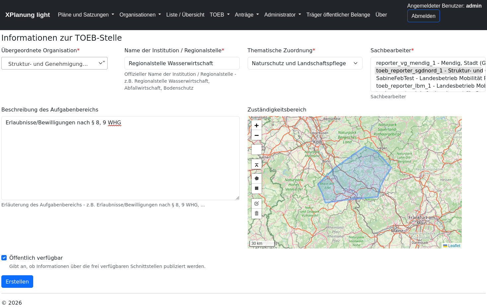
Trägerbeteiligung - Zuordnung der TOEBs
Bei der Verwaltung von Trägerbeteiligungen können TOEBs selektiert und zugewiesen werden.
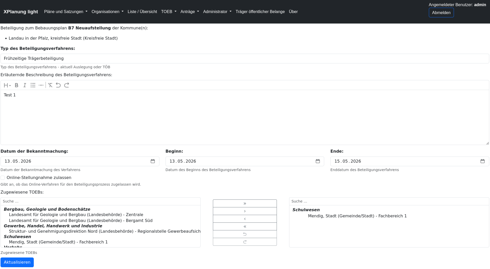
Es gibt verschiedene Filter (Ergänzung der Titel um Sonderzeichen), die die Selektion der TOEBS erleichtern
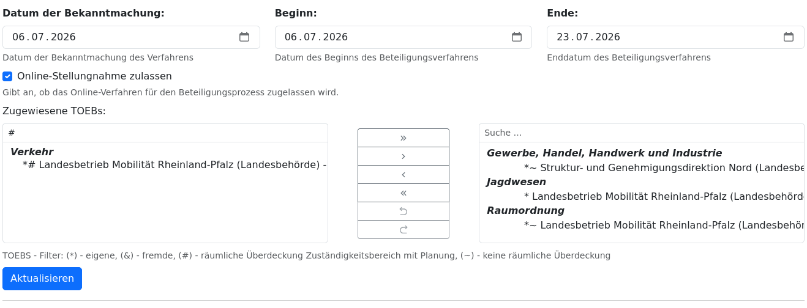
Benachrichtigung TOEB
Über die Liste der durchgeführten Beteiligungsverfahren gibt es die Möglichkeit die zugewiesenen TOEBs automatisch per Mail zu benachrichtigen. Die Benachrichtigung wird dokumentiert und ein Protokoll im json-Format abgespeichert.
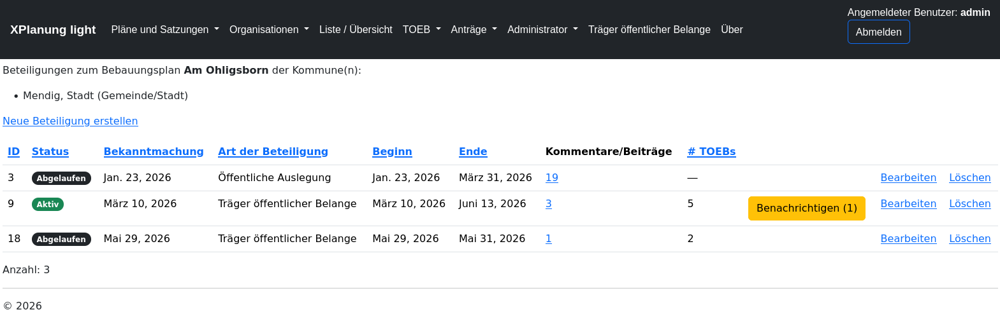
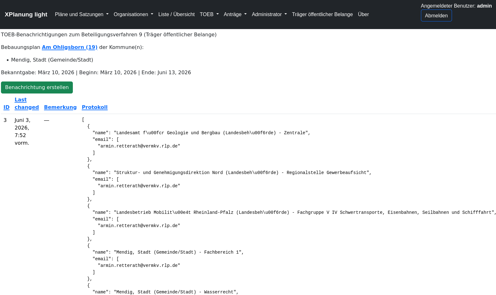
Arbeitsliste TOEB
Die TOEB-Reporter haben Zugriff auf eine Arbeitsliste.
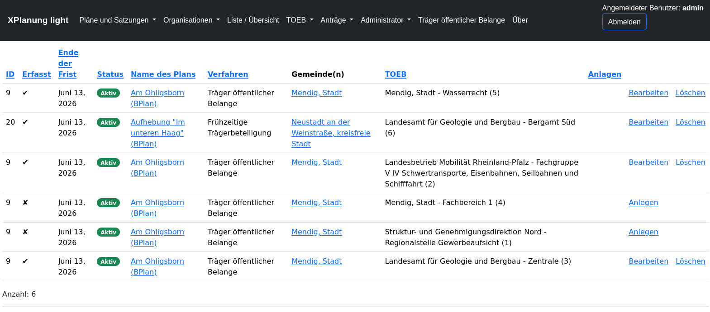